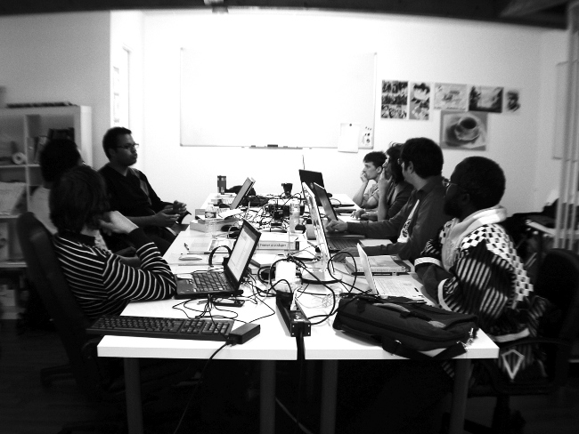
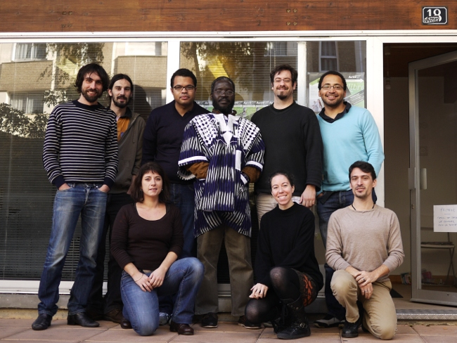

À propos de ce livre
Les auteurs de ce livre à propos des fontes libres ont été guidés par les objectifs suivants :
- décrire le contexte historique, les attentes et les besoins exprimés à la fois par les graphistes et les utilisateurs face aux barrières de l'approche propriétaire dans l'usage et la création de typos et de fontes ;
- expliquer les enjeux et recommander une approche juridique validée par la communauté du logiciel libre ;
- donner des exemples pratiques pour tirer parti des méthodologies et des outils librement disponibles pour réaliser des fontes libres, les publier et en tirer profit sous diverses formes.
Un ouvrage collectif
Ce livre sous licence libre est une production originale en français ; plusieurs co-auteurs francophones de différents pays ont participé à sa rédaction.
Le cœur de l'ouvrage de plus de 140 pages a été réalisé en 5 jours dans le cadre d'un BookSprint qui s'est tenu à Rennes (France) du 5 au 9 novembre 2011, grâce à l'initiative et avec le soutien de l'Organisation Internationale de la Francophonie1 .

Co-rédacteurs présents lors du BookSprint :
- Frank Adebiaye (Bénin / France), comptable-typographe, fondeur et auteur d'articles et de livres sur la typographie, dont une monographie consacrée à François Boltana, pionnier français de la typographie numérique, et éditée chez Atelier Perrousseaux. Il est également le fondateur de la fonderie Velvetyne , première fonderie libre en France ;
- Denis Jacquerye (Congo R.D. / Belgique), fondeur. A participé notamment au projet de création de la police libre DejaVu ;
- Cédric Gémy (France), graphiste et formateur sur les logiciels libres graphiques, auteur de livres sur Gimp, Scribus et Inkscape, membre fondateur du LibreGraphicsMeeting, de FlossManuals Francophone et de l'Association Francophone des graphistes libres ;
- Pierre Huyghebaert (Belgique), graphiste attaché à Speculoos, professeur apprenant à la Cambre, membre de Open Source Publishing et futur chercheur dans le projet européen Libre Graphics Research Unit ;
- Boureima Kinda (Burkina Faso), chargé de publication de manuels scolaires en français et en langues nationales aux Editions Elan-D et utilisateur de logiciels libres de la chaîne graphique dans le cadre de son activité professionnelle ;
- Murielle Souyris (France), graphiste et formatrice sur les logiciels libres, cofondatrice de Libres à vous
- Nicolas Spalinger (Suisse, France), membre du NRSI (Non-Roman Script Initiative) SIL International, co-auteur de l'Open Font License, membre de la Debian Fonts Task Force. Mainteneur et éditeur de Planet Open Fonts (agrégateur anglophone de blogs des membres de la communauté internationale des fontes libres). Contributeur au Libre Graphics Meeting. Contributeur au projet ScriptSource.org. Gérant de la SS2L (Société de Service en Logiciels Libres) IndiGO Labs spécialisé dans les fontes libres, le web & l'imprimé, l'internationalisation ainsi que la traduction.
Facilitatrice du Booksprint :
- Elisa de Castro Guerra, par ailleurs graphiste utilisant les logiciels libres, auteur de livres sur Inkscape, membre fondatrice de FlossManuals Francophone et de l'Association Francophone des graphistes libres.
Co-rédacteurs en ligne et contributions externes :
- Jil Daniel2
- Jean-Bernard Macon
- Christian Ambaud

Un ouvrage vivant
Ce manuel est vivant : il évolue au fur et à mesure des contributions. Pour consulter la dernière version actualisée, nous vous invitons à visiter régulièrement le volet francophone de Flossmanuals3 et plus particulièrement sur la page d'accueil du livre Fontes Libres.
N'hésitez pas à votre tour à améliorer ce manuel en nous faisant part de vos commentaires dans la liste de diffusion francophone de Flossmanuals, ou, si vous avez des talents de rédacteur et une bonne connaissance sur le sujet des fontes, à vous inscrire en tant que contributeur pour proposer la création de nouveaux chapitres.
Vous avez dit Booksprint ?
Expérimentée et popularisée par la Floss Manuals Foundation dans le cadre de ses activités de création de manuels multilingues sur les logiciels et pratiques libres, la méthodologie du Booksprint permet de rédiger en un temps très court des livres de qualité.
Un groupe d'experts se retrouve dans un même lieu pour rédiger durant 3 à 5 jours un manuel. L’usage de la plate-forme de co-rédaction en ligne permet également à d'autres personnes intéressées de s’associer à distance à l’expérience.
Pour faciliter la structuration et la rédaction de ce manuel, les co-rédacteurs ont décidé de confronter leurs connaissances et leurs points de vue à deux persona, deux profils imaginaires de lecteurs auxquels ce livre pourrait s'adresser : une graphiste européenne - Mathilde - et un graphiste africain - Obasanjo.
Un manuel libre disponible sous plusieurs formats et supports
Ce livre est disponible depuis le site de Flossmanuals sous plusieurs formes : livre imprimé, pages web, pdf et ePub, ce dernier format permettant de le consulter facilement sur des appareils mobiles.
Publié sous licence Creative Commons CC-BY-SA 2.0 fr et GPLv2, ce manuel peut être lu et copié librement.
- Creative Commons CC-BY-SA: Paternité et Partage à l'Identique : http://creativecommons.org/licenses/by-sa/2.0/fr/
- GNU GPL : http://www.gnu.org/copyleft/gpl.html
Vous consultez l'édition révisée et augmentée du 3 décembre 2011.
Remerciements
Durant le processus de rédaction du manuel, le groupe de co-rédacteurs a été confronté à un besoin d'utiliser une fonte libre pour l'illustration des différentes méthodologies et pour réaliser des captures d'écran adaptées. Le créateur de fontes - Loïc Sander - a été contacté afin de libérer sa typo Fengardo4 et ainsi participer à l'élaboration de l'ouvrage. Nous lui témoignons ici toute notre gratitude pour avoir laissé ses fontes s'embarquer dans notre aventure.
La réalisation de cet ouvrage s'est grandement appuyée sur FontForge5, formidable logiciel libre de création et d'édition de fontes sans équivalent créé par George Williams et généreusement mis à disposition et au service de la communauté.
Il faut d'ailleurs souligner que pour les besoins des captures d'écrans, la traduction en français de FontForge initiée par Pierre Hanser & Yannis Haralambous a été partiellement mise à jour par les auteurs du bookprint directement à partir de la version de développement. Les mises à jour se sont concentrées sur les différentes fonctionnalités couvertes par ce livre pour harmoniser les différents termes. Ces contributions seront reversées au projet FontForge pour en faire bénéficier tous les utilisateurs.
- Organisation Internationale de la Francophonie - http://www.francophonie.org^
- Graphiste indépendant http://jil.daniel.free.fr et blogueur http://bizyod.design.free.fr^
- http://fr.flossmanuals.net^
- http://www.akalollip.com/blog/?p=1673^
- http://fontforge.sourceforge.net/^